What is Propa Data Management App
The Propa Data Management App is a platform built on DHIS2, designed to help organizations collect, manage, and analyze data related to participants.
It provides tools for data entry, validation, visualization, and reporting, supporting both individual participant-level records and aggregate data at higher administrative levels.
Propa Data Management App
Login Page
Access the platform here Propa Data Platform and insert the login credentials i.e username and DHIS2 as provided.
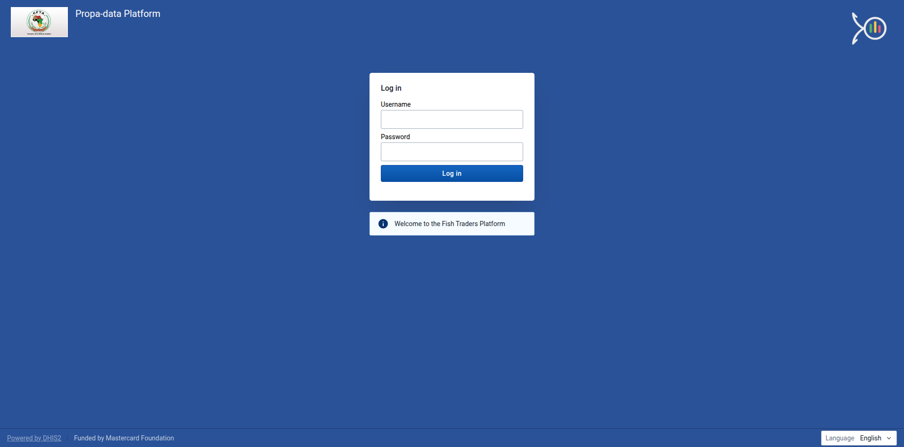
Dashboards
Once logged in, you will see custom dashboards that summarize key indicators, participant activities, and survey results.
These dashboards provide quick insights for monitoring and decision making.
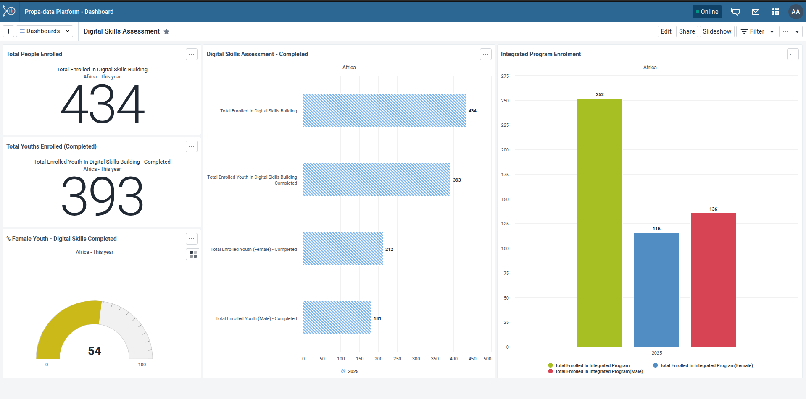
Applications
Propa Data integrates several DHIS2 apps to handle different tasks.
You can access these apps from the App Menu (grid icon at the top right corner).
Examples include:
- Data Entry App: For entering aggregate data.
- Capture App: For registering Participants and recording events.
- User Management App: For user management and adding new users.
- Maintenance App: For configuring metadata such as programs, data elements, indicators, and organisation units.
- Event Reports & Data Visualizer: For analyzing and visualizing data.
- Dashboard App: For quick access to key performance metrics.
- PropaData Notifications App: For creating and sending notifications to users.
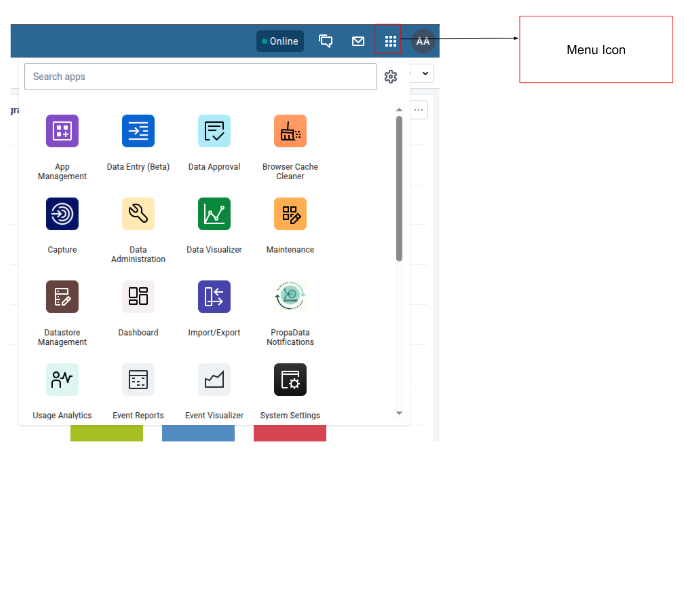
User Management App
The User Management App is where administrators manage access to the Propa Data platform.
From here, you can create users, assign roles, and group users for easier management.
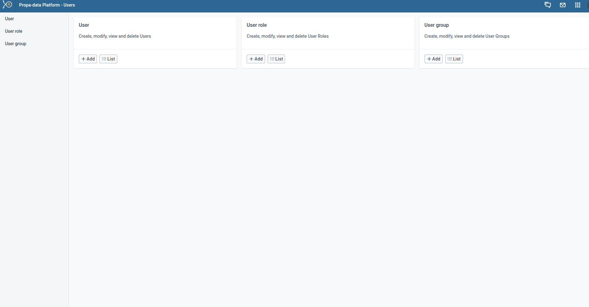
Adding a New User
1. Open the User Management App.
2. Click on the +Add button.
3. Fill in the required fields such as:
- Username
- Full Name
-
Password
-
E-mail / Phone number
-
Expiration Date - For short term platform users
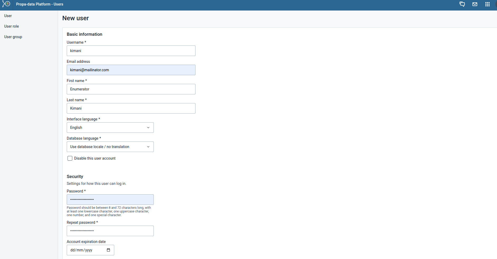
4. Assign the user to an Organisation Unit 5. Assign User Roles based on responsibilities.
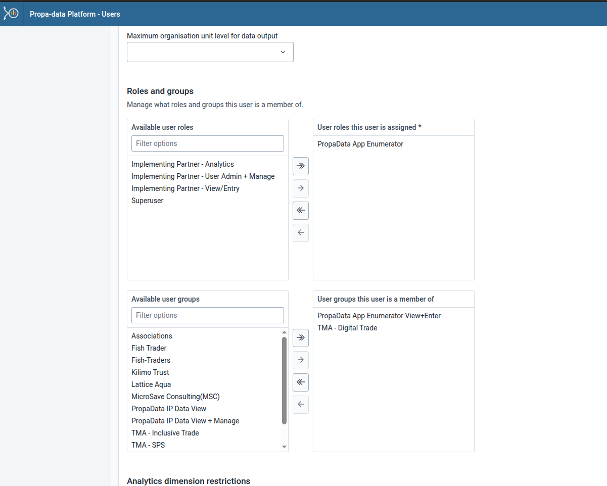
6. Review the details and click Create User.
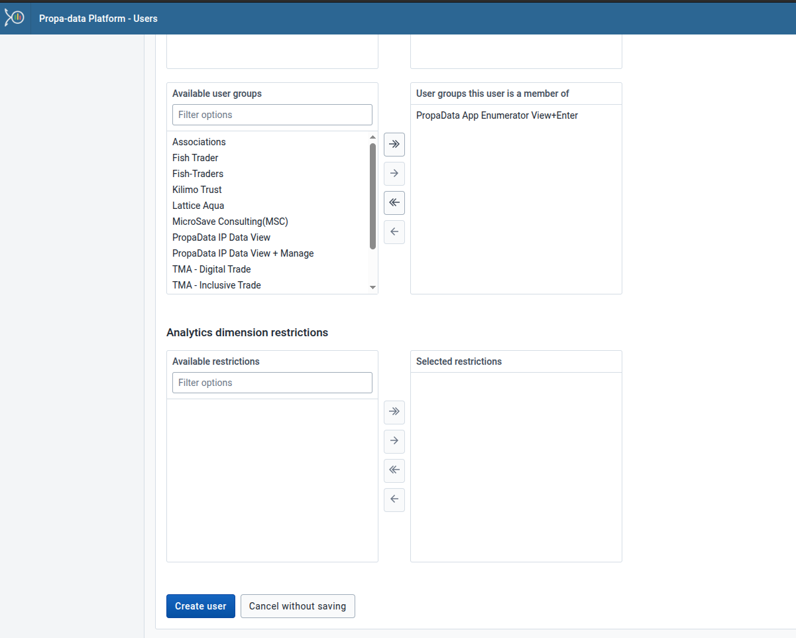
Creating a User Role
User Roles define what apps and functionalities a user can access.
1. In the User Management App, go to User Roles.
2. Click Create Role.
3. Enter:
- Role Name (e.g., Enumerator Role).
- Description.
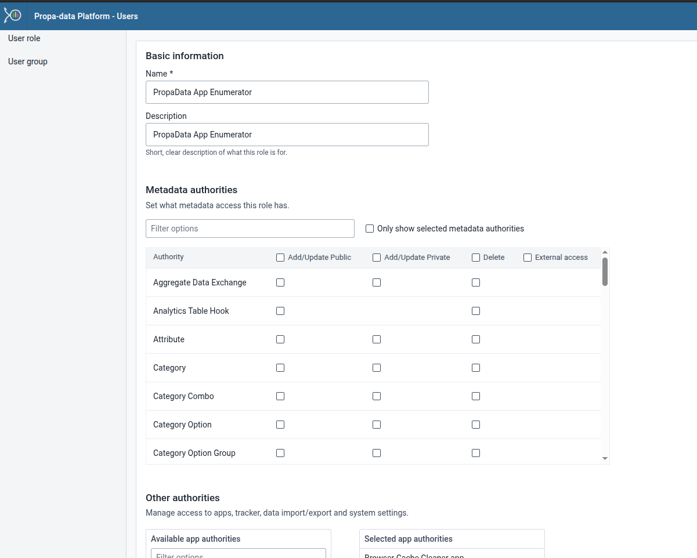
4. Assign App Authorities:
- For enumerators, select Capture App access only.
- For program officers, include Data Visualizer, Event Reports, and Dashboards.
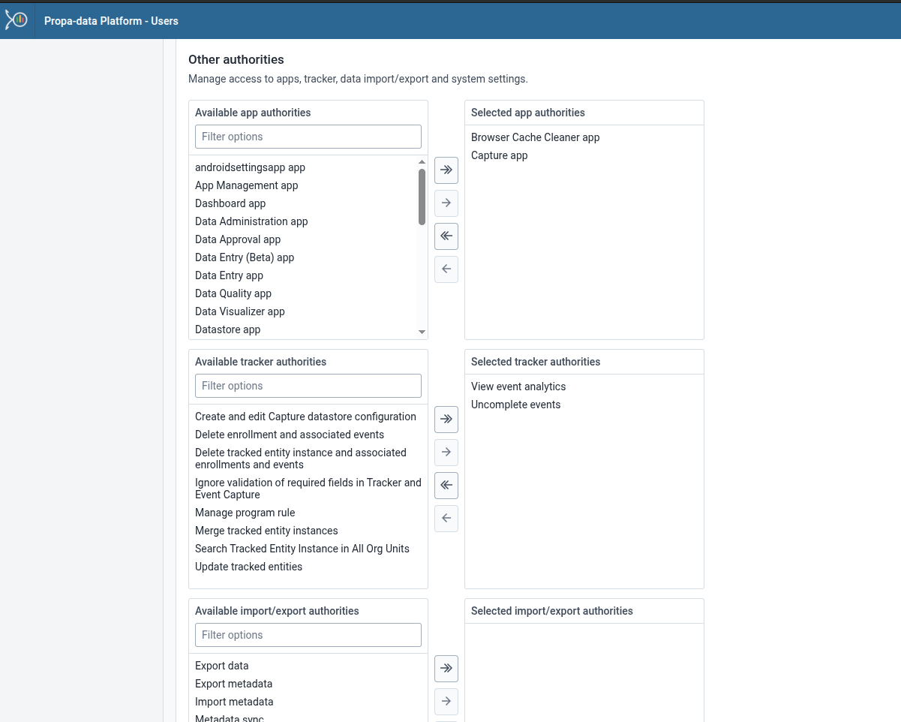
5. Save the role.
Creating a User Group
User Groups are useful for managing users collectively (Enumerators).
- In the User Management App, go to User Groups.
- Click Create User Group.
- Enter a Group Name (Enumerators).
- Search and add users to the group.
- Save the group.
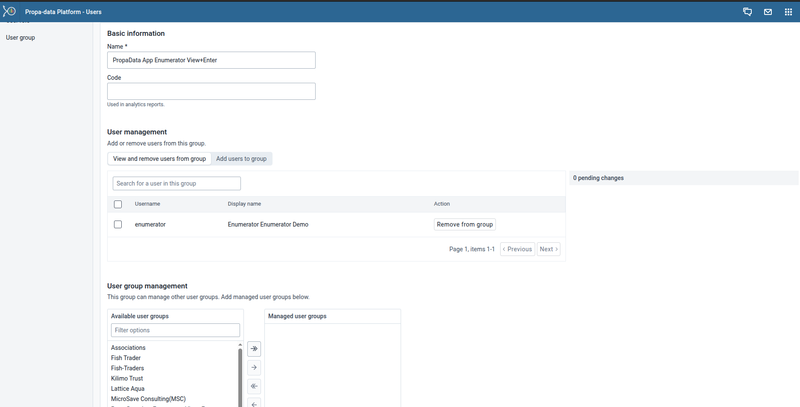
- This makes it easier to assign permissions, share dashboards, or send notifications to multiple users at once.
Maintenance App
The Maintenance App is where administrators configure the core building blocks of the Propa Data Management System.
Here you can define data elements, attributes, indicators and option sets that power data entry, analysis and reporting.
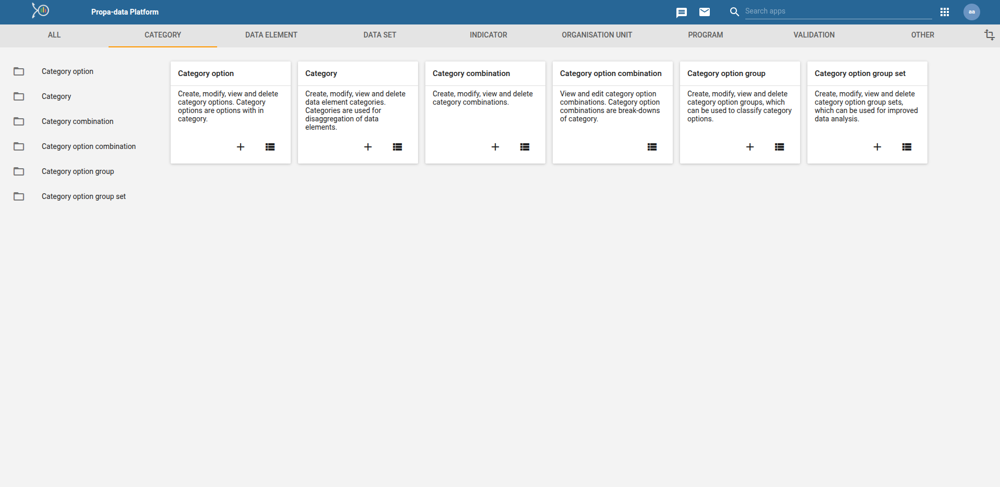
1. Data Elements
Data elements are the basic units of information collected in the system (e.g., Trader Age, Training Completed, Business Type).
They are the raw data fields used in forms, programs, and indicators.
- Example: participants with registered businesses.
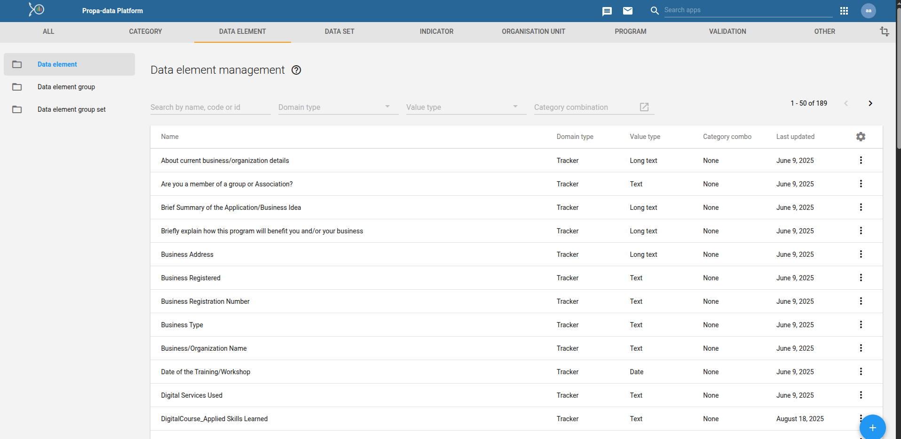
2. Option Sets
Option sets define predefined lists of choices for data entry fields.
This ensures standardization and avoids inconsistent answers.
- Example: Gender (Male, Female), Business Type (Retail, Wholesale, Fish Processor).
3. Indicators
Indicators are custom calculations created from data elements, attributes, or other indicators.
They turn raw data into meaningful measures for monitoring and reporting.
Creating an Indicator
1. Open the Maintenance App → Indicators.
2. Click + Add New and provide:
- Name → e.g., Digital Skills Completion Rate
- Short Name → used in charts/tables
- Description → purpose of the indicator
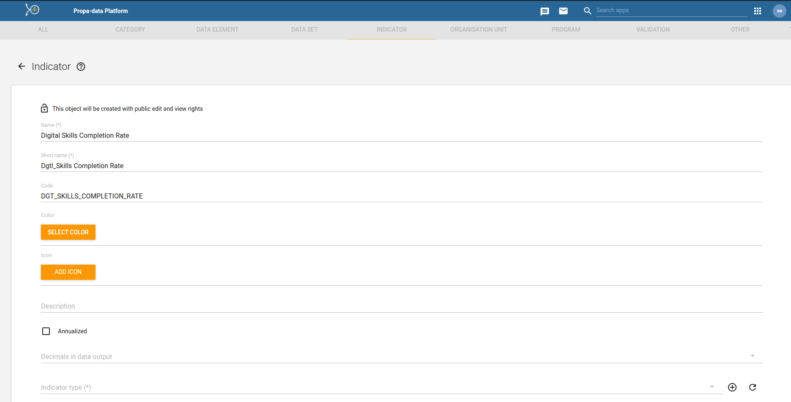
3. Build the Formula:- Numerator → participants who completed training
- Denominator → Total enrolled participants
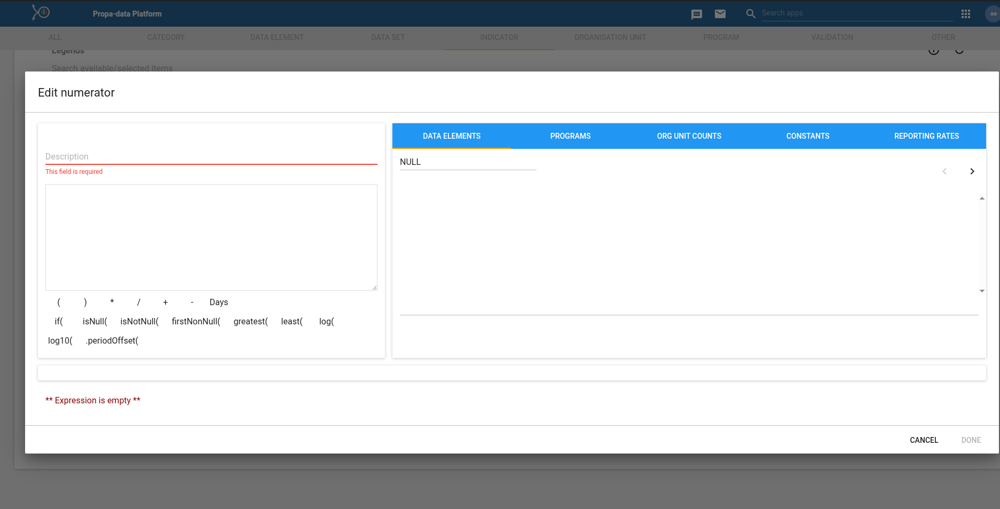
4. (Optional) Add it to an Indicator Group for easy categorization.
5. Save and test it in the Data Visualizer app.
Data Entry App / Aggregate Reporting
The Data Entry app in Propa Data is used to capture aggregate information.
Aggregate data refers to information collected at a group level (i.e, ward, sub-county, county) rather than for a single individual.
Typical aggregate entries in Propa Data include:
- Number of participants registered in a given period.
- Number of surveys completed by in a certain ward.
- Counts of activities (trainings, market visits, outreach events).
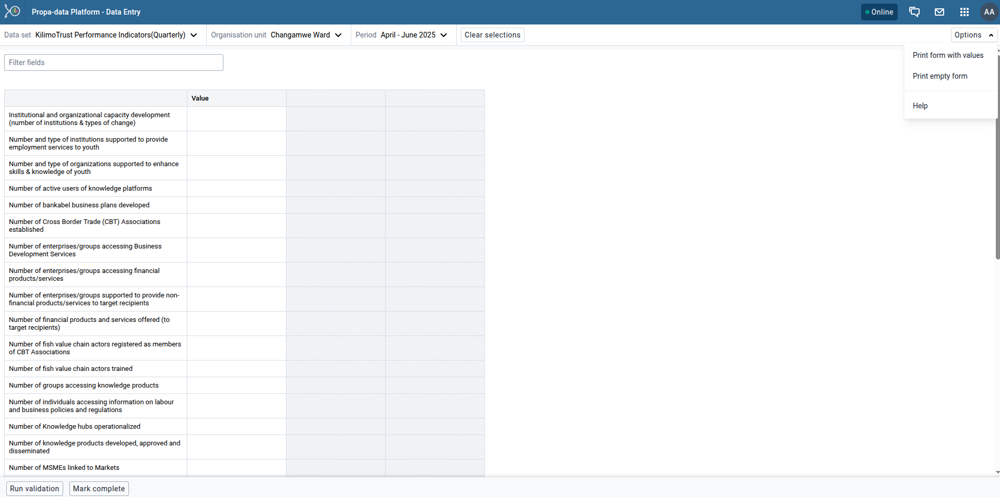
How the Data Entry App is Organized
Propa Data uses a hierarchical organisational structure, so all data must be linked to the correct level:
- County
- Sub-County
- Ward
🔑 Important: All aggregate data (registrations, surveys, activities) must be entered under your assigned ward. This ensures that reporting and dashboards reflect the correct geographic location.
Key Features of the Data Entry App
-
Organisation Unit Selection
Choose your ward (or higher level if authorised) before entering data. -
Dataset Selection
Different datasets represent different forms, e.g., Trader Onboarding, Survey Completion or Activities Report. -
Period Selection
Enter data for a specific reporting period (weekly, monthly or quarterly, depending on the dataset). -
Forms
Data entry forms may include numbers, yes/no fields or options. Required fields are highlighted. -
Validation
Before saving, the system checks your entries (i.e., missing or invalid values). -
Save & Complete
- Use Save if you’re still working on the form.
- Use Complete when all data is filled in correctly. Completed forms lock the period for that dataset.
Data Capture App / Longitudinal Reporting
The Capture app in Propa Data is used to register events — activities or records that happen at a specific time and place.
Unlike routine aggregate data (collected at regular intervals), events are logged as they occur, and each event can carry detailed information.
How it Works in Propa Data
- Events are tied to a program.
- In this case, Propa Data uses the Fish Trader Program.
- participants are treated as tracked entities, meaning:
- You can search existing participants using attributes such as phone number, names or trader ID.
- You can also register new participants into the program if they don’t already exist.
- Each event is linked to a date and organisation unit (e.g., your assigned ward).
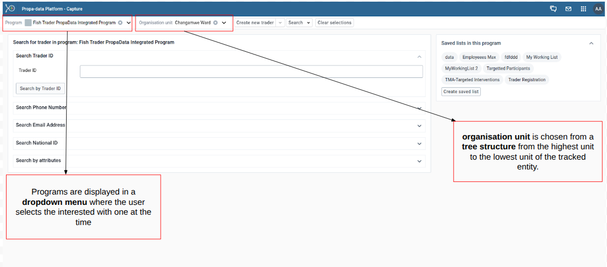
Typical Uses of the Capture App
- Registering new participants into the Fish Trader Program.
- Onboarding assessments (e.g., digital skills survey).
- Recording trader activities such as training sessions, market attendance, or extension visits.
- Longitudinal follow-up of participants across multiple events (e.g., training → survey → progress checks).
Data Visualizer
The Data Visualizer App is a powerful tool for program officers to analyze and present data collected in Propa Data.
It allows you to create charts, tables, and pivot views that help monitor program performance and compare results across different groups or locations.
How to Build a Chart
Follow these steps to create your own visualizations:
1. Select Your Data
- Choose the data element or indicator you want to visualize (e.g., Digital Skills Assessment Completed).
- You can select one or multiple indicators depending on the type of chart.
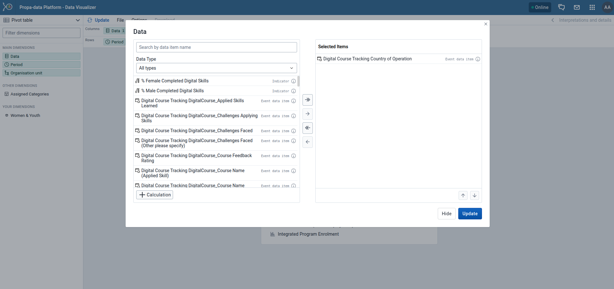
2. Select the Time Period
- Choose either a Relative Period (e.g., Last month, This quarter, This year)
- Or a Fixed Period (e.g., January 2025, Q1 2025).
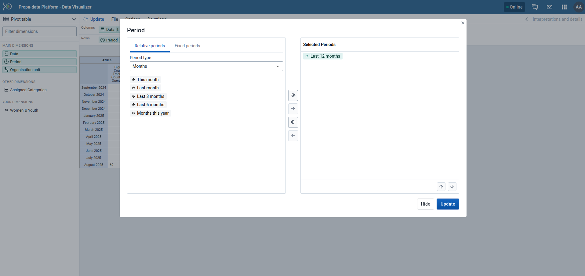
3. Select Organisation Units
- Navigate through the hierarchy (County → Sub-County → Ward).
- Select the area(s) you want to analyze.
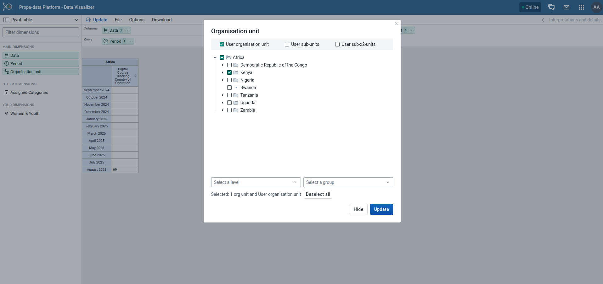
4. Choose the Chart Type
- Decide how you want to present your data:
- Bar chart (good for comparisons)
- Line chart (good for trends over time)
- Pie chart (good for proportions)
- Tables / Pivot tables (for detailed breakdowns)
Example Output
Here is a pie chart showing male vs. female participants who have completed the Digital Skills Assessment.
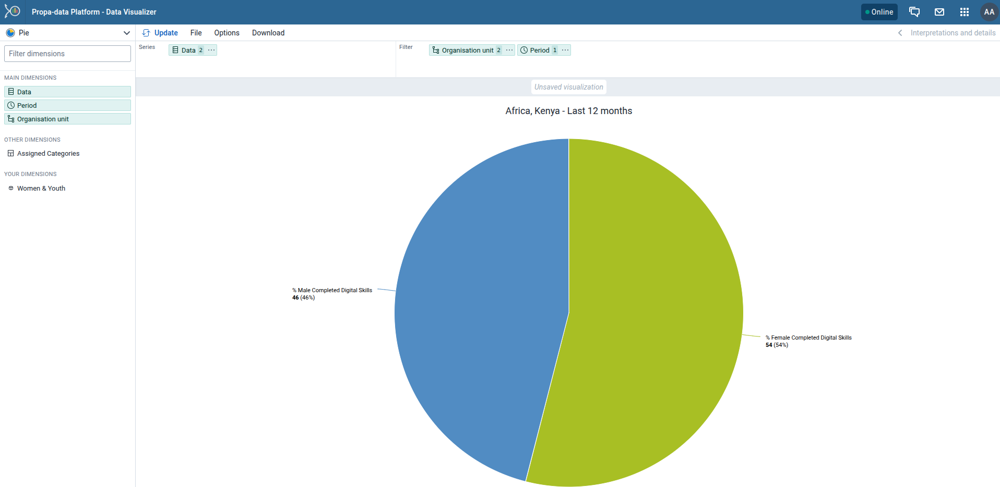
You can also download or share your charts directly from the visualizer.
PropaData Notifications
The PropaData Notifications App allows you to create, schedule, and track notifications across different channels (SMS, Email, and In-App).
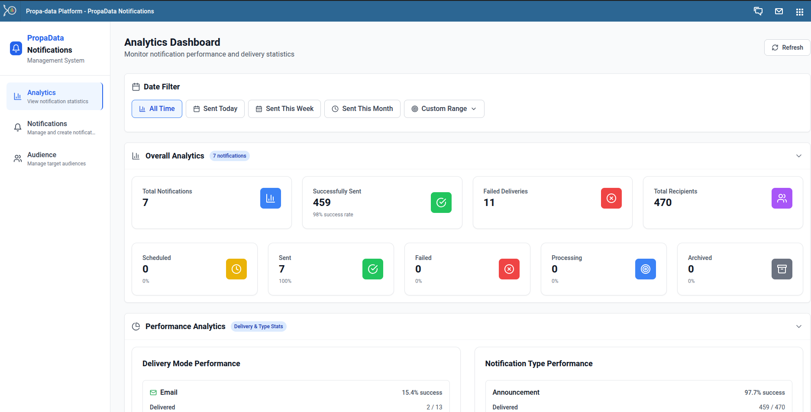
Notification Analytics
The Analytics Dashboard provides an overview of all notifications sent. It displays:
- Total Notifications Sent
- Successful Deliveries
- Failed Deliveries
- Total Recipients
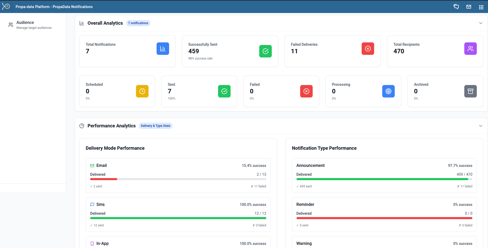
Individual Notification Analytics
You can view detailed analytics for each notification by clicking the eye icon.
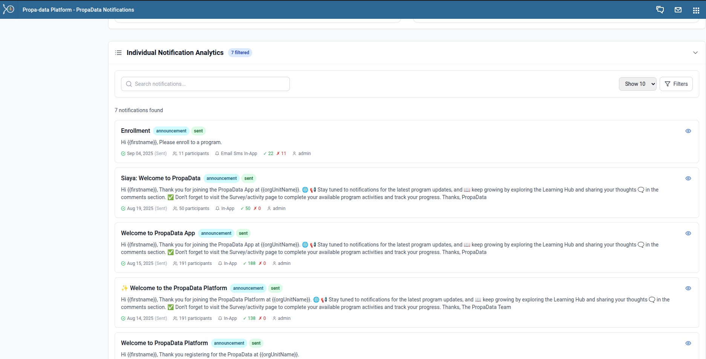
This displays key details such as:
- Title
- Status
- Created By
- Type
- Message Body
- Scheduled Time / Sent Time
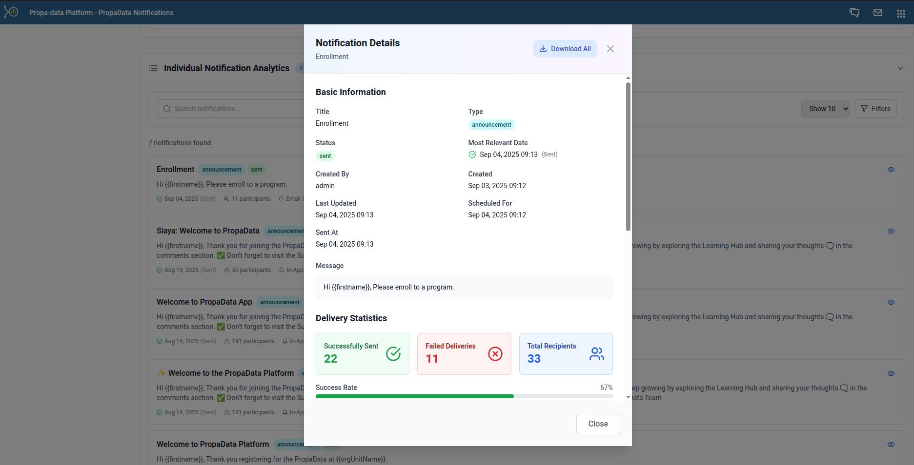
The analytics also show a delivery breakdown by channel (SMS, Email, In-App).
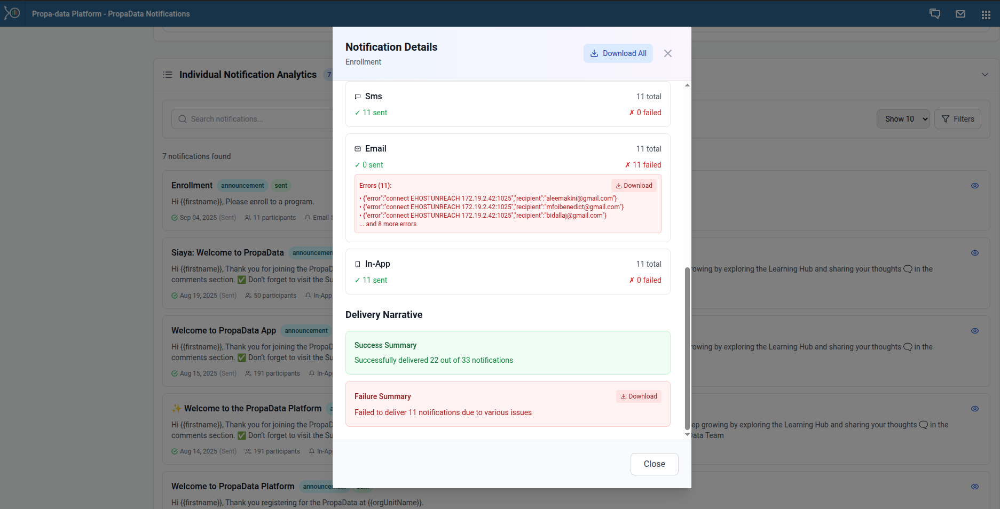
Creating Notifications
To create a new notification, click + Schedule Notification button.
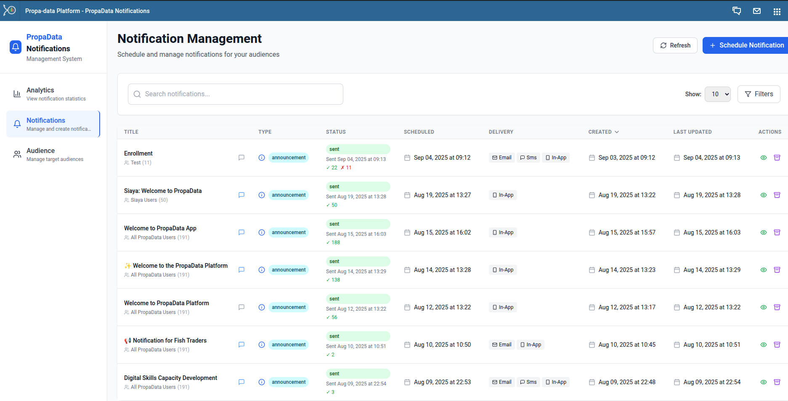
Step 1: Add Notification Details
Title – Enter a descriptive title.
Message – Write your message. You can insert dynamic templates such as:
- First Name
- Full Name
- Gender
- Phone Number
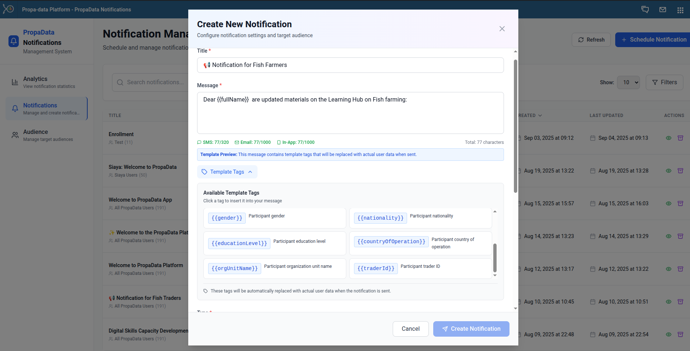
Step 2: Define Notification Settings
- Type – Select the notification type.
- Delivery Mode – Choose Email, SMS, or In-App.
- Target Audience – Define recipients.
- Send Timing – Send immediately (default: scheduled after 5 minutes) or schedule for a later date/time.
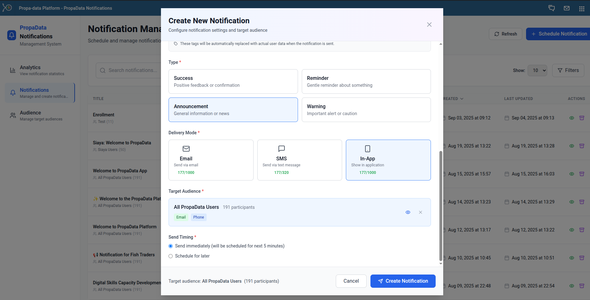
For scheduled notifications, simply pick your preferred date and time.
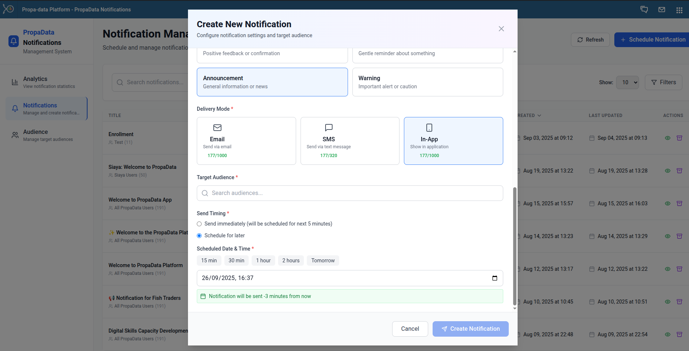
Once created, the notification will appear in the list with the status Scheduled until it is sent.
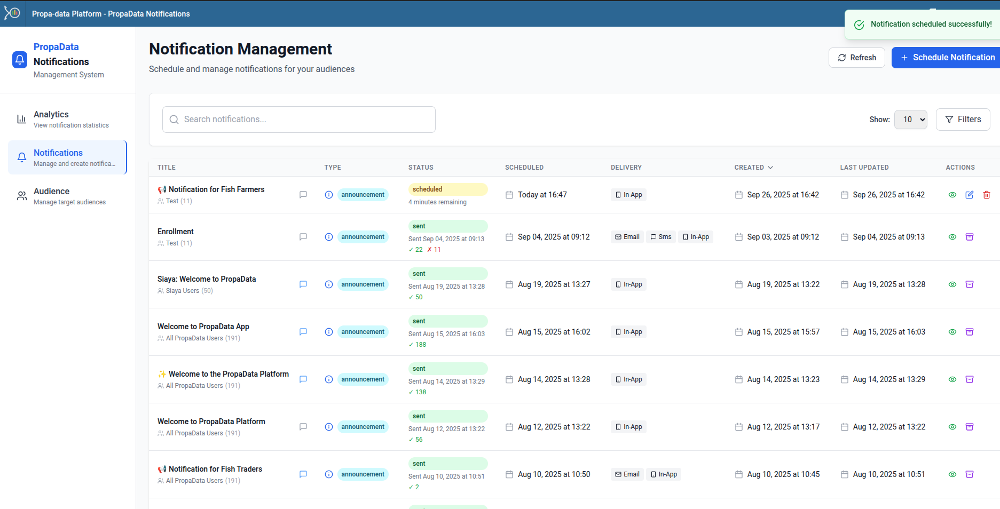
Notification Audience
The target audience for various notifications
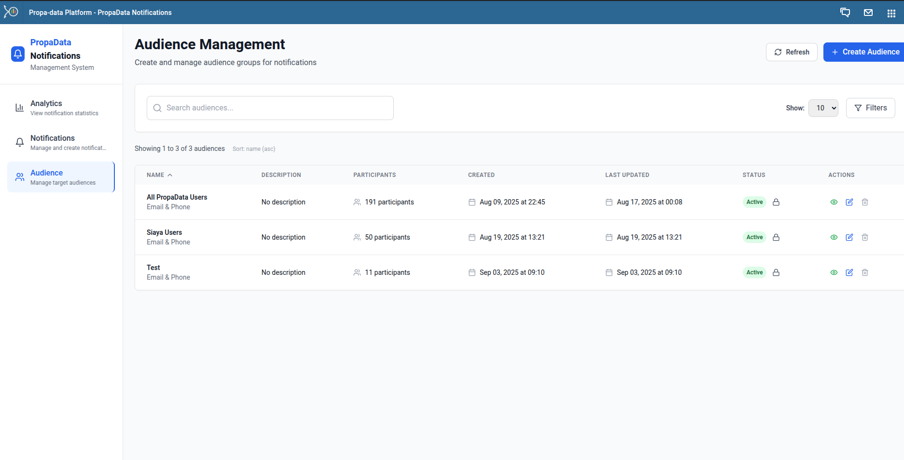
Adding a New Audience
When creating an audience, ensure recipients have valid Email or Phone Numbers (for SMS notifications).
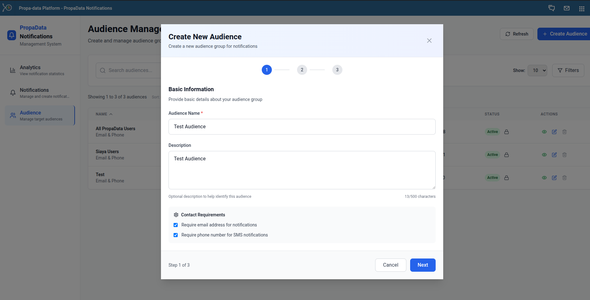
You can select participants directly and apply filters for easier participants filtering and add them to the audience.
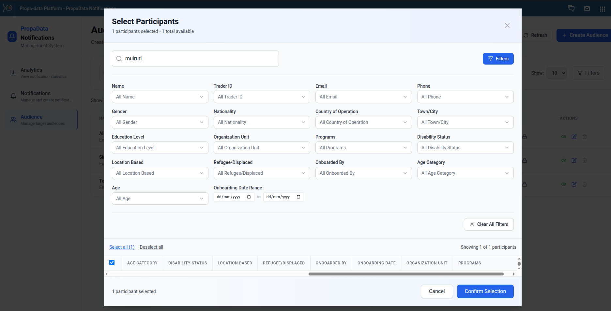
After confirming the details, click Confirm Selection.
A confirmation will appear if the audience is valid.
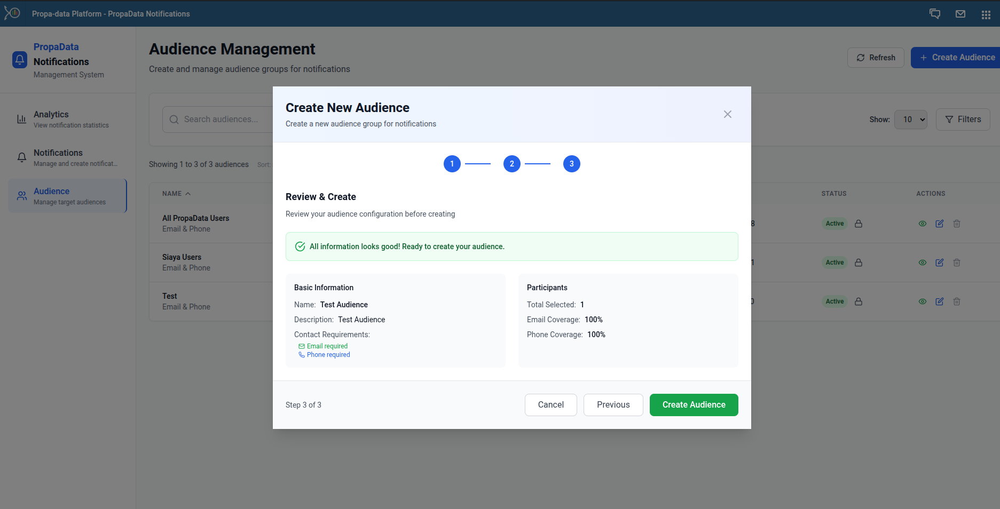
✅ With these steps, you can manage notifications, monitor delivery performance, and ensure effective communication with participants.